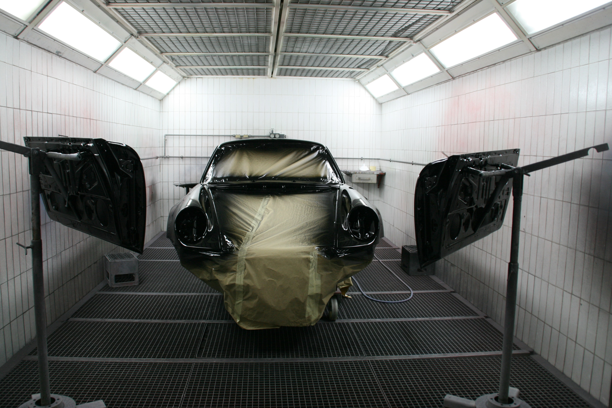
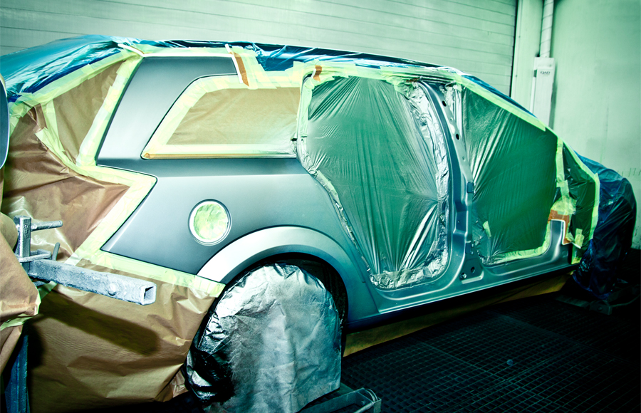
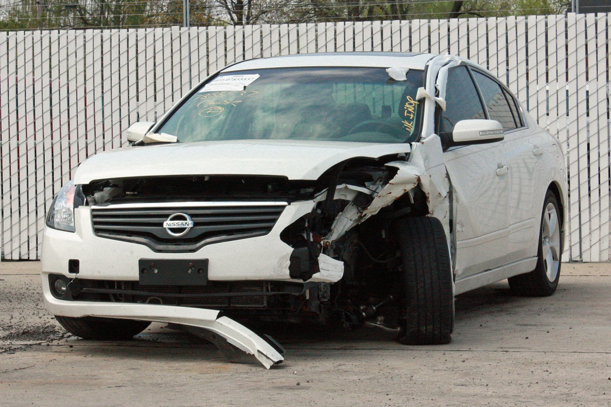
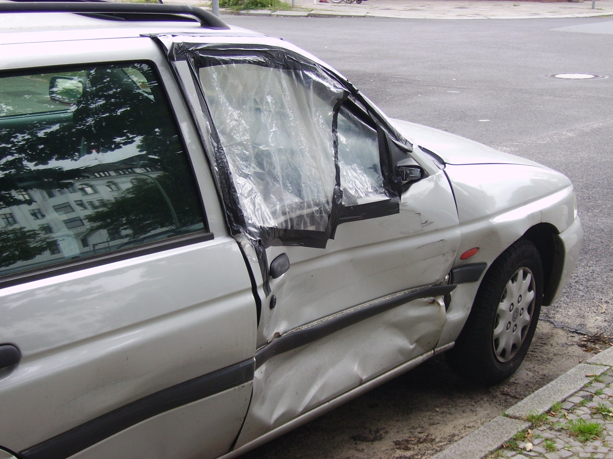
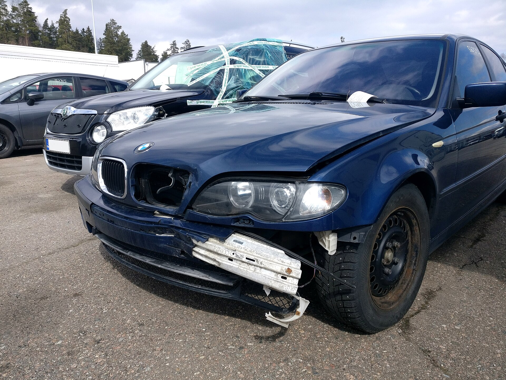
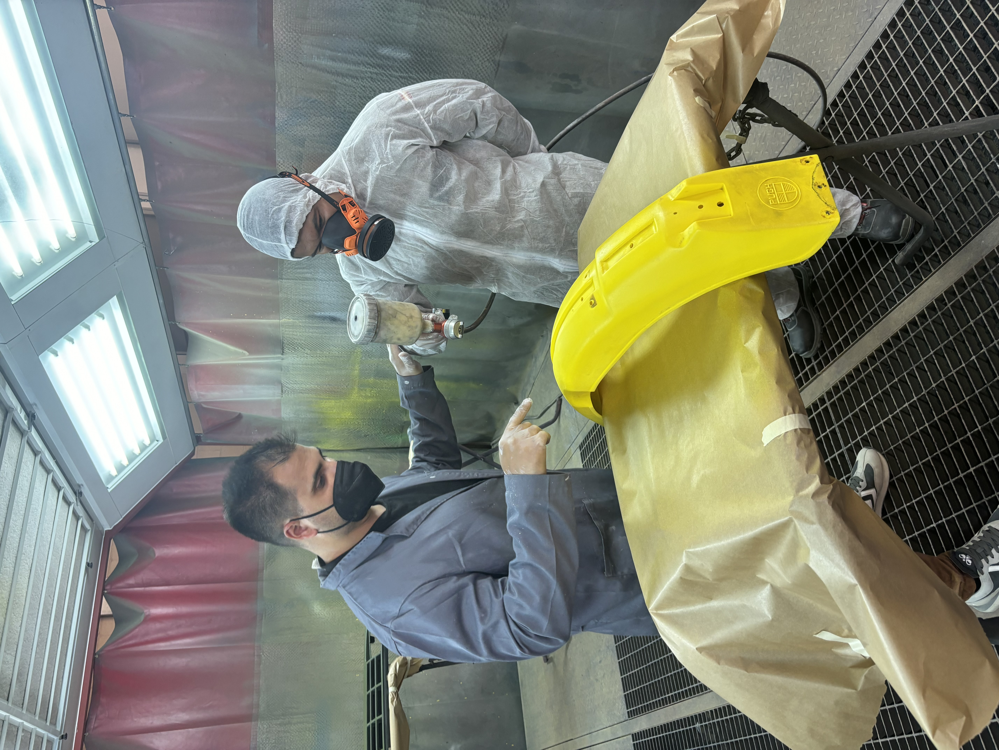
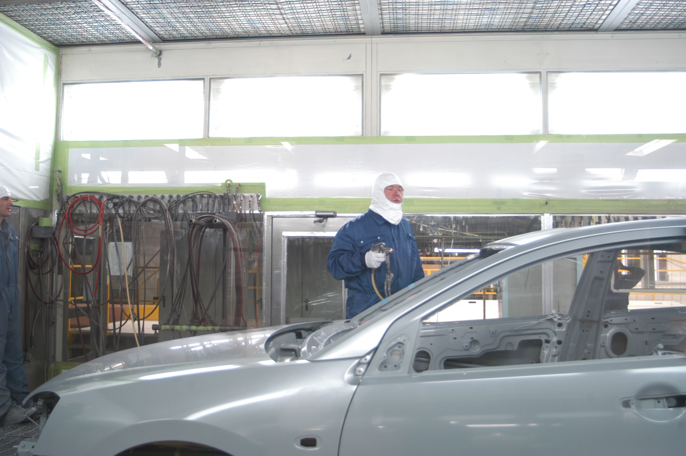
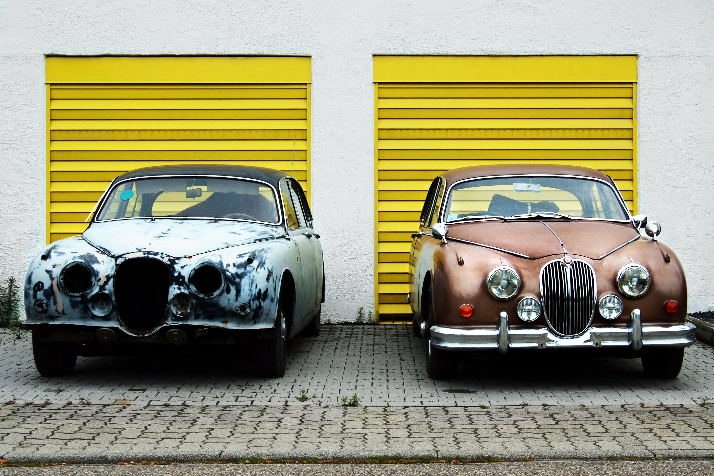

Tarkastus
Kartoitamme vauriot pintaa syvemmältä ja kerromme, mitä auto tarvitsee.

Kerava · Vuodesta 2015
Vakuutusyhtiöiden hyväksymä. Suoritamme myös erikoismaalaukset. Asiakkaan asialla jo vuodesta 2015.
Palvelut
Saat meiltä maalaukset, peltityöt, kolarikorjaukset ja vauriotarkastukset. Hoidamme myös vakuutusyhtiön paperit.

01Perusmaalaukset ja erikoismaalaukset omissa tiloissamme kaikille merkeille.

02Korikorjaus nykyaikaisilla laitteilla. Alkuperäiset tai vastaavat varaosat.

03Oikominen, uudet pellit ja pintatyöt. Pienet kolhut ja isommat vauriot.

04Vahinkotarkastus ja arvio suoraan vakuutusyhtiöllesi.

05Värinvaihdot, osamaalaukset ja vaativammat pintatyöt.

Yritys
Automaalaamo Pykäläinen Oy on erikoistunut automaalauksiin sekä kolarien aiheuttamiin korjaus- ja peltitöihin. Toimimme vuosien kokemuksella ja ammattitaidolla. Kun valitset meidät, saat autosi takaisin käyttöön huippukunnossa.
Näin etenemme
Kartoitamme vauriot pintaa syvemmältä ja kerromme, mitä auto tarvitsee.
Teemme vaurioarvion ja hoidamme vakuutusyhtiön edellyttämät paperit.
Peltityöt, hitsaus ja maalaus saman katon alla. Pidämme sinut ajan tasalla.
Auto palautetaan ajokuntoisena ja viimeisteltynä – laadusta tinkimättä.
Asiakkaat
Arviointi sekä ajan saaminen sujui kivasti. Asiansa osaava henkilökunta. Käyntini perusteella voin suositella.
Konepelti ja puskuri maalattiin huolellisesti. Pienet huomiot korjattiin priimaksi. Erityiskiitos vastuullisuudesta.
Pieniä korjauksia ja kokonaisia värinvaihtoja. Työn jälki on ollut aina täydellistä. Vahva suositus.

Ota yhteyttä